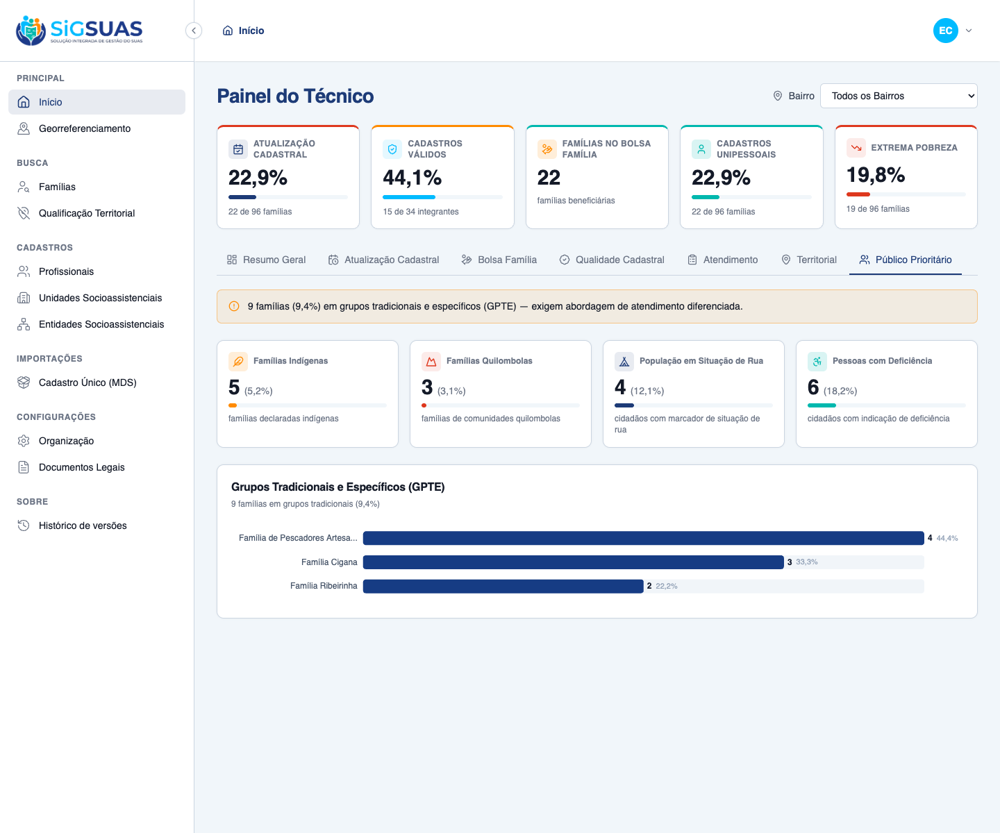
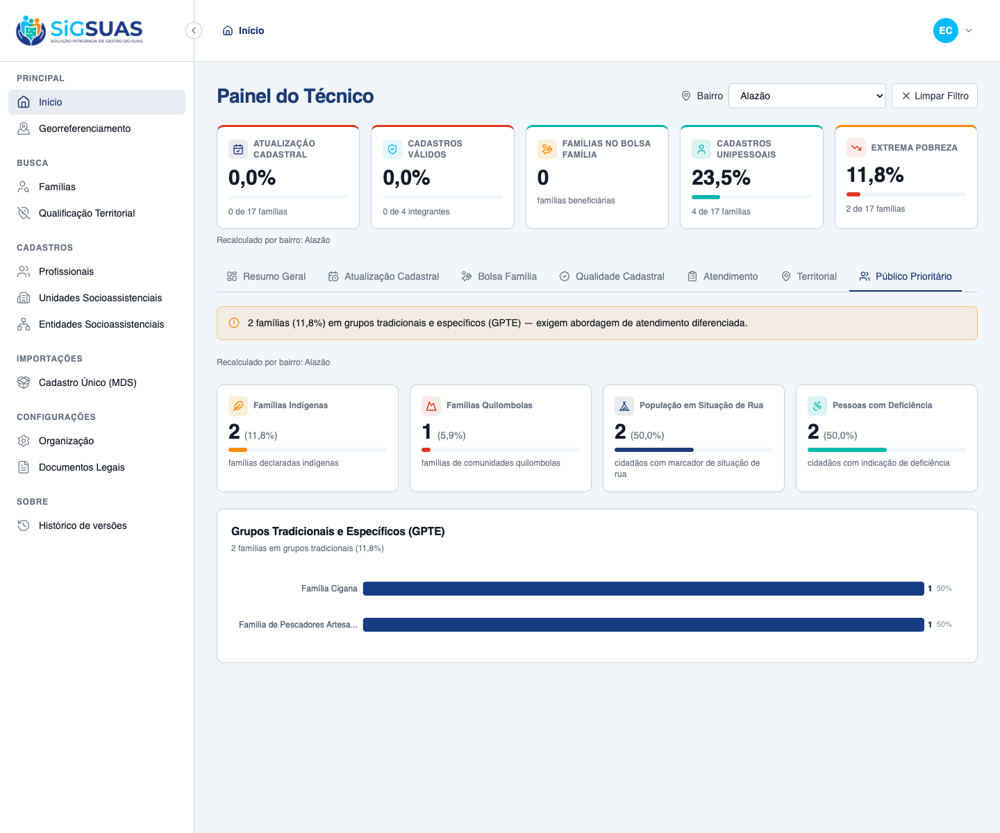
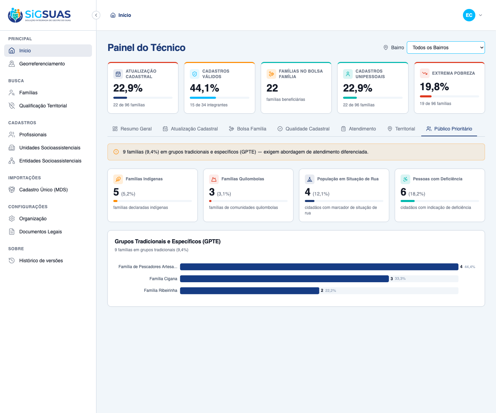

8 Critérios de Aceite verificados: 4 por navegador (dirigindo o app real como Master), 1 parcial (UI + suíte) e 3 automatizados (Pest). O Painel 7 entrega cinco indicadores de público prioritário — Famílias Indígenas, Famílias Quilombolas, População em Situação de Rua, Pessoas com Deficiência (PcD) e GPTE detalhado por grupo tradicional —, recalculados sob o filtro global por Bairro (RG01). Resultado geral: todos os critérios ATENDIDOS. Dados de evidência semeados no tenant E2E: municipal (Indígenas 5, Quilombolas 3, Situação de Rua 4, PcD 6, GPTE 9 = Pescadores 4 + Cigana 3 + Ribeirinha 2) e bairro Alazão (2 / 1 / 2 / 2 / 2).
| CA | Critério | Status |
|---|---|---|
| CA09 | Mapeamento de públicos prioritários | ATENDIDO · navegador |
| RG01-a | Comportamento padrão — "Todos os Bairros" (consolidação municipal) | ATENDIDO · navegador |
| RG01-b | Comportamento dinâmico — seleção de bairro recalcula | ATENDIDO · navegador |
| RG01-c | Ação rápida — "Limpar Filtro" volta ao município | ATENDIDO · navegador |
| RN09 | Indicadores do Painel 7 | ATENDIDO · navegador + automatizado |
| CA-GPTE-DETALHE | GPTE por grupo (desc), exclui "Nenhuma", soma = total | ATENDIDO · automatizado |
| CA-PESSOA-DISTINTA | Cidadão contado uma única vez | ATENDIDO · automatizado |
| CA-ISOLAMENTO | Isolamento multi-tenant + validações + gate | ATENDIDO · automatizado |
Critério (Gherkin): Dado que consulto a aba "Público Prioritário" Quando o painel renderiza os dados Então visualizo os quantitativos específicos de cada grupo étnico, tradicional ou de proteção especial no município ou no bairro selecionado.
Como foi testado: Login como Master → abrir a aba Público Prioritário. O painel apresenta os quantitativos de cada público: quatro cartões (Famílias Indígenas, Famílias Quilombolas, População em Situação de Rua, PcD) e o gráfico do GPTE detalhado por grupo tradicional (Pescadores, Cigana, Ribeirinha).

Critério (Gherkin): Dado que acabei de carregar a aba "Público Prioritário" Quando nenhum bairro está selecionado Então o endpoint é chamado sem neighborhood_uuid E todos os indicadores refletem a consolidação municipal.
Como foi testado: Ao carregar, o filtro global de Bairro inicia em Todos os Bairros. Os cinco indicadores exibem a consolidação municipal.
Critério (Gherkin): Dado que o filtro global está em "Todos os Bairros" Quando eu seleciono um bairro Então o endpoint é chamado com o neighborhood_uuid do bairro E os cinco indicadores recalculam considerando apenas as famílias geocodificadas dentro do bairro (e seus integrantes ativos).
Como foi testado: Selecionar o bairro Alazão no filtro global. A barra fixa e os cinco indicadores recalculam instantaneamente, restringindo-se às famílias geocodificadas dentro do bairro.

Critério (Gherkin): Dado que estou com um bairro selecionado Quando eu aciono "Limpar Filtro" Então o endpoint é chamado sem neighborhood_uuid E o painel volta à consolidação municipal completa.
Como foi testado: Com "Alazão" selecionado, acionar Limpar Filtro. O painel retorna imediatamente à visão "Todos os Bairros".

Critério (Gherkin): Dado um recorte com famílias e integrantes ativos Quando o painel é calculado Então "Famílias Indígenas" e "Famílias Quilombolas" trazem contagens de famílias E "População em Situação de Rua" e "PcD" trazem contagens de cidadãos ativos E "GPTE" traz a contagem de famílias por grupo tradicional (desc) + total.
Como foi testado: A UI evidencia os cinco indicadores; a corretude das contagens (famílias vs cidadãos distintos), o GPTE por grupo (desc, sem "Nenhuma", soma = total) e a exclusão do sentinela são cobertos pela suíte Pest (apêndice).
Critério (Gherkin): Dado famílias em grupos tradicionais distintos Quando o GPTE é calculado Então cada grupo presente aparece com sua contagem, ordenado desc E o grupo "Nenhuma" (code 0) nunca é contado E a soma dos grupos é igual ao gpte.total.
Como foi testado: Verificado pela suíte Pest — it breaks GPTE down by group (desc), excludes "Nenhuma", and sums to the total.
Evidência por cobertura automatizada — ver Anexo.
Critério (Gherkin): Dado um cidadão PcD vinculado a duas famílias do recorte Quando o indicador PcD é calculado Então esse cidadão é contado uma única vez (distinct por pessoa).
Como foi testado: Verificado pela suíte Pest — it counts a citizen once even when linked to two families of the scope.
Evidência por cobertura automatizada — ver Anexo.
Critério (Gherkin): Dado um usuário vinculado ao Tenant A Quando ele solicita o Painel 7 Então apenas famílias/integrantes/GPTE do Tenant A entram nos cálculos E um neighborhood_uuid fora do município retorna 422; sem permissão retorna 403.
Como foi testado: Verificado pela suíte Pest — DashboardPriorityGroupsIsolationTest (BelongsToTenant), 422 para neighborhood fora do município, recorte vazio e o gate do operador base (403).
Evidência por cobertura automatizada — ver Anexo.
PASS Tests\Feature\Dashboard\PriorityGroupsTest ✓ it counts family markers and active-person markers separately (RN02… 0.54s ✓ it counts a citizen once even when linked to two families of the sc… 0.05s ✓ it breaks GPTE down by group (desc), excludes "Nenhuma", and sums t… 0.09s ✓ it recalculates for a neighborhood, covering only geocoded families… 0.06s ✓ it returns zeroed indicators and an empty gpte when the scope has n… 0.04s ✓ it returns 422 for a neighborhood_uuid outside the tenant municipal… 0.04s ✓ it denies the panel to the base operator without the dedicated role 0.04s ✓ it grants the panel to the Master without any add-on role 0.04s PASS Tests\Feature\TenantIsolation\DashboardPriorityGroupsIsolationTest ✓ it never counts families, members or GPTE from another tenant (RN10… 0.09s Tests: 9 passed (40 assertions) Duration: 1.09s